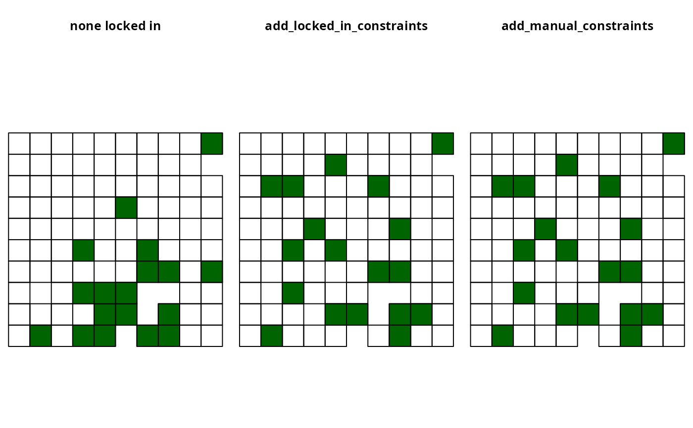
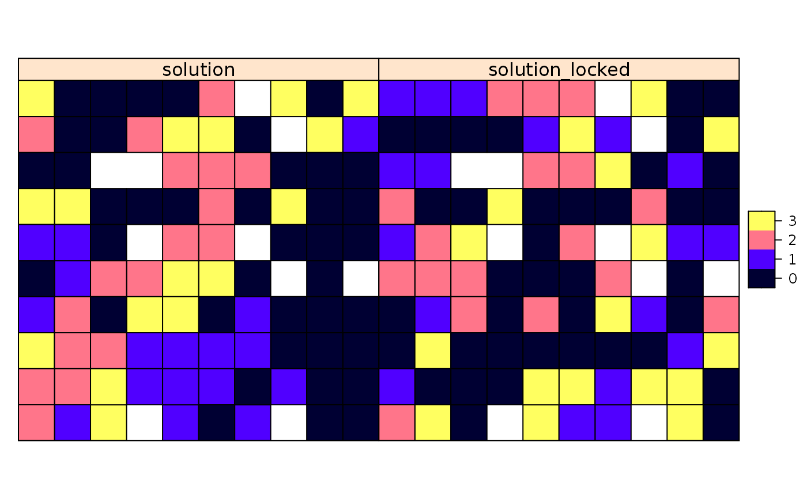

R/add_manual_locked_constraints.R
add_manual_locked_constraints.RdAdd constraints to a conservation planning problem to ensure
that solutions allocate (or do not allocate) specific planning units to
specific management zones. This function offers more fine-grained control
than the add_locked_in_constraints and
add_locked_out_constraints functions.
add_manual_locked_constraints(x, data) # S4 method for ConservationProblem,data.frame add_manual_locked_constraints(x, data) # S4 method for ConservationProblem,tbl_df add_manual_locked_constraints(x, data)
| x |
|
|---|---|
| data |
|
ConservationProblem-class object with the constraints
added to it.
The argument to data must contain the following fields
(columns):
"pu"integer planning unit identifier.
"zone"character names of zones. Note that this
argument is optional for arguments to x that contain a single
zone.
"status"numeric values indicating how much
of each planning unit should be allocated to each zone in the solution.
For example, the numeric values could be binary values (i.e. zero
or one) for problems containing binary-type decision variables
(using the add_binary_decisions function). Alternatively,
the numeric values could be proportions (e.g. 0.5) for problems
containing proportion-type decision variables (using the
add_proportion_decisions).
# set seed for reproducibility set.seed(500) # load data data(sim_pu_polygons, sim_features, sim_pu_zones_polygons, sim_features_zones) # create minimal problem p1 <- problem(sim_pu_polygons, sim_features, "cost") %>% add_min_set_objective() %>% add_relative_targets(0.2) %>% add_binary_decisions() # create problem with locked in constraints using add_locked_constraints p2 <- p1 %>% add_locked_in_constraints("locked_in") # create identical problem using add_manual_locked_constraints locked_data <- data.frame(pu = which(sim_pu_polygons$locked_in), status = 1) p3 <- p1 %>% add_manual_locked_constraints(locked_data)#> Optimize a model with 5 rows, 90 columns and 450 nonzeros #> Variable types: 0 continuous, 90 integer (90 binary) #> Coefficient statistics: #> Matrix range [2e-01, 9e-01] #> Objective range [2e+02, 2e+02] #> Bounds range [1e+00, 1e+00] #> RHS range [6e+00, 1e+01] #> Found heuristic solution: objective 3934.6218396 #> Presolve time: 0.00s #> Presolved: 5 rows, 90 columns, 450 nonzeros #> Variable types: 0 continuous, 90 integer (90 binary) #> Presolved: 5 rows, 90 columns, 450 nonzeros #> #> #> Root relaxation: objective 3.496032e+03, 16 iterations, 0.00 seconds #> #> Nodes | Current Node | Objective Bounds | Work #> Expl Unexpl | Obj Depth IntInf | Incumbent BestBd Gap | It/Node Time #> #> 0 0 3496.03193 0 4 3934.62184 3496.03193 11.1% - 0s #> H 0 0 3585.9601335 3496.03193 2.51% - 0s #> #> Explored 1 nodes (16 simplex iterations) in 0.00 seconds #> Thread count was 1 (of 4 available processors) #> #> Solution count 2: 3585.96 3934.62 #> #> Optimal solution found (tolerance 1.00e-01) #> Best objective 3.585960133519e+03, best bound 3.496031931890e+03, gap 2.5078%#> Optimize a model with 5 rows, 90 columns and 450 nonzeros #> Variable types: 0 continuous, 90 integer (90 binary) #> Coefficient statistics: #> Matrix range [2e-01, 9e-01] #> Objective range [2e+02, 2e+02] #> Bounds range [1e+00, 1e+00] #> RHS range [6e+00, 1e+01] #> Found heuristic solution: objective 4017.6427161 #> Presolve removed 0 rows and 10 columns #> Presolve time: 0.00s #> Presolved: 5 rows, 80 columns, 400 nonzeros #> Variable types: 0 continuous, 80 integer (80 binary) #> Presolved: 5 rows, 80 columns, 400 nonzeros #> #> #> Root relaxation: objective 3.610717e+03, 15 iterations, 0.00 seconds #> #> Nodes | Current Node | Objective Bounds | Work #> Expl Unexpl | Obj Depth IntInf | Incumbent BestBd Gap | It/Node Time #> #> 0 0 3610.71743 0 4 4017.64272 3610.71743 10.1% - 0s #> H 0 0 3649.3763088 3610.71743 1.06% - 0s #> #> Explored 1 nodes (15 simplex iterations) in 0.00 seconds #> Thread count was 1 (of 4 available processors) #> #> Solution count 2: 3649.38 4017.64 #> #> Optimal solution found (tolerance 1.00e-01) #> Best objective 3.649376308848e+03, best bound 3.610717428789e+03, gap 1.0593%#> Optimize a model with 5 rows, 90 columns and 450 nonzeros #> Variable types: 0 continuous, 90 integer (90 binary) #> Coefficient statistics: #> Matrix range [2e-01, 9e-01] #> Objective range [2e+02, 2e+02] #> Bounds range [1e+00, 1e+00] #> RHS range [6e+00, 1e+01] #> Found heuristic solution: objective 4017.6427161 #> Presolve removed 0 rows and 10 columns #> Presolve time: 0.00s #> Presolved: 5 rows, 80 columns, 400 nonzeros #> Variable types: 0 continuous, 80 integer (80 binary) #> Presolved: 5 rows, 80 columns, 400 nonzeros #> #> #> Root relaxation: objective 3.610717e+03, 15 iterations, 0.00 seconds #> #> Nodes | Current Node | Objective Bounds | Work #> Expl Unexpl | Obj Depth IntInf | Incumbent BestBd Gap | It/Node Time #> #> 0 0 3610.71743 0 4 4017.64272 3610.71743 10.1% - 0s #> H 0 0 3649.3763088 3610.71743 1.06% - 0s #> #> Explored 1 nodes (15 simplex iterations) in 0.00 seconds #> Thread count was 1 (of 4 available processors) #> #> Solution count 2: 3649.38 4017.64 #> #> Optimal solution found (tolerance 1.00e-01) #> Best objective 3.649376308848e+03, best bound 3.610717428789e+03, gap 1.0593%# plot solutions par(mfrow = c(1,3), mar = c(0, 0, 4.1, 0)) plot(s1, main = "none locked in") plot(s1[s1$solution_1 == 1, ], col = "darkgreen", add = TRUE) plot(s2, main = "add_locked_in_constraints") plot(s2[s2$solution_1 == 1, ], col = "darkgreen", add = TRUE) plot(s3, main = "add_manual_constraints")# create minimal problem with multiple zones p4 <- problem(sim_pu_zones_polygons, sim_features_zones, c("cost_1", "cost_2", "cost_3")) %>% add_min_set_objective() %>% add_relative_targets(matrix(runif(15, 0.1, 0.2), nrow = 5, ncol = 3)) %>% add_binary_decisions() # create data.frame with the following constraints: # planning units 1, 2, and 3 must be allocated to zone 1 in the solution # planning units 4, and 5 must be allocated to zone 2 in the solution # planning units 8 and 9 must not be allocated to zone 3 in the solution locked_data2 <- data.frame(pu = c(1, 2, 3, 4, 5, 8, 9), zone = c(rep("zone_1", 3), rep("zone_2", 2), rep("zone_3", 2)), status = c(rep(1, 5), rep(0, 2))) # print locked constraint data print(locked_data2)#> pu zone status #> 1 1 zone_1 1 #> 2 2 zone_1 1 #> 3 3 zone_1 1 #> 4 4 zone_2 1 #> 5 5 zone_2 1 #> 6 8 zone_3 0 #> 7 9 zone_3 0# create problem with added constraints p5 <- p4 %>% add_manual_locked_constraints(locked_data2)#> Optimize a model with 105 rows, 270 columns and 1620 nonzeros #> Variable types: 0 continuous, 270 integer (270 binary) #> Coefficient statistics: #> Matrix range [2e-01, 1e+00] #> Objective range [2e+02, 2e+02] #> Bounds range [1e+00, 1e+00] #> RHS range [1e+00, 1e+01] #> Found heuristic solution: objective 11123.160980 #> Presolve removed 3 rows and 0 columns #> Presolve time: 0.00s #> Presolved: 102 rows, 270 columns, 1350 nonzeros #> Variable types: 0 continuous, 270 integer (270 binary) #> Presolved: 102 rows, 270 columns, 1350 nonzeros #> #> #> Root relaxation: objective 9.843159e+03, 91 iterations, 0.00 seconds #> #> Nodes | Current Node | Objective Bounds | Work #> Expl Unexpl | Obj Depth IntInf | Incumbent BestBd Gap | It/Node Time #> #> 0 0 9843.15923 0 14 11123.1610 9843.15923 11.5% - 0s #> H 0 0 10160.156963 9843.15923 3.12% - 0s #> #> Explored 1 nodes (91 simplex iterations) in 0.01 seconds #> Thread count was 1 (of 4 available processors) #> #> Solution count 2: 10160.2 11123.2 #> #> Optimal solution found (tolerance 1.00e-01) #> Best objective 1.016015696337e+04, best bound 9.843159228876e+03, gap 3.1200%#> Optimize a model with 105 rows, 270 columns and 1620 nonzeros #> Variable types: 0 continuous, 270 integer (270 binary) #> Coefficient statistics: #> Matrix range [2e-01, 1e+00] #> Objective range [2e+02, 2e+02] #> Bounds range [1e+00, 1e+00] #> RHS range [1e+00, 1e+01] #> Found heuristic solution: objective 10775.471081 #> Presolve removed 9 rows and 17 columns #> Presolve time: 0.00s #> Presolved: 96 rows, 253 columns, 1182 nonzeros #> Variable types: 0 continuous, 253 integer (253 binary) #> Presolved: 96 rows, 253 columns, 1182 nonzeros #> #> #> Root relaxation: objective 9.914683e+03, 71 iterations, 0.00 seconds #> #> Nodes | Current Node | Objective Bounds | Work #> Expl Unexpl | Obj Depth IntInf | Incumbent BestBd Gap | It/Node Time #> #> 0 0 9914.68289 0 13 10775.4711 9914.68289 7.99% - 0s #> #> Explored 1 nodes (71 simplex iterations) in 0.00 seconds #> Thread count was 1 (of 4 available processors) #> #> Solution count 1: 10775.5 #> #> Optimal solution found (tolerance 1.00e-01) #> Best objective 1.077547108111e+04, best bound 9.914682890311e+03, gap 7.9884%# create two new columns representing the zone id that each planning unit # was allocated to in the two solutions s4$solution <- category_vector(s4@data[, c("solution_1_zone_1", "solution_1_zone_2", "solution_1_zone_3")]) s4$solution <- factor(s4$solution) s4$solution_locked <- category_vector(s5@data[, c("solution_1_zone_1", "solution_1_zone_2", "solution_1_zone_3")]) s4$solution_locked <- factor(s4$solution_locked) # plot solutions spplot(s4, zcol = c("solution", "solution_locked"), axes = FALSE, box = FALSE)